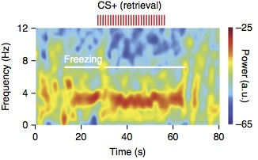
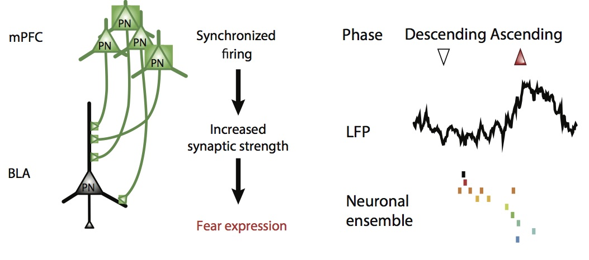

Prefrontal 4-Hz oscillations during fear behavior
We identified a novel internally-generated brain state, characterized by 4-Hz oscillations in the prefrontal cortex of mice during fear behavior. (Nature Neuroscience, 2016)

Prefrontal neuronal assemblies temporally control fear behaviour
We identified a novel phase-specific coding mechanism, which dynamically regulates the development of prefrontal neuronal assemblies to control the precise timing of fear responses. (Nature, 2016)